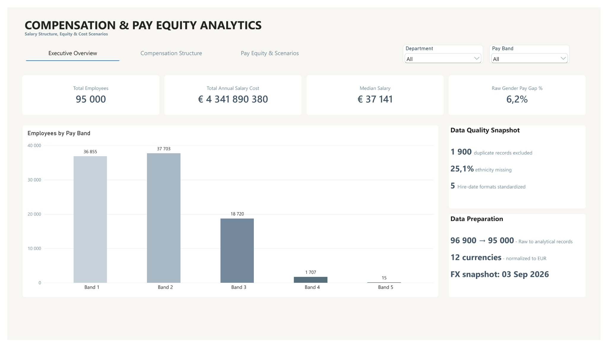
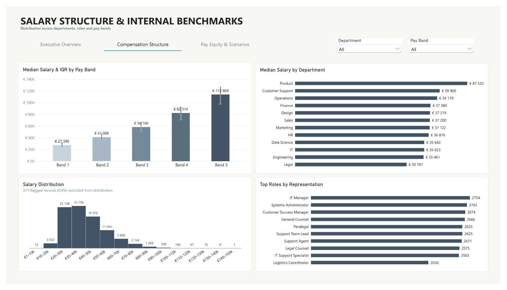
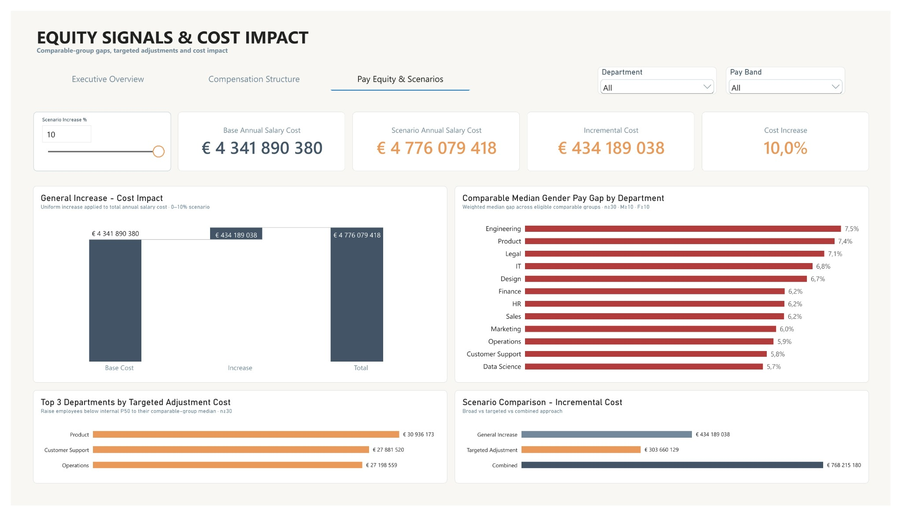

Compensation & Pay Equity Analytics
A People Analytics / Compensation project focused on salary structure, internal pay-equity signals and the financial impact of broad and targeted compensation scenarios.

From salary data to decision scenarios
The analysis asks how salary is distributed across departments, roles and pay bands; whether a raw gender pay gap remains visible within more comparable job-related groups; which employees fall below an internal benchmark; and what different compensation actions would cost.
Scope: this is compensation analytics, not payroll analytics. The dataset does not contain payroll transactions, budget data or a historical payroll time series, so it is not used for payroll actuals, Budget vs Actual or forecasting.
Audit first, transform second
The synthetic compensation data combines three source datasets and was loaded into MySQL before Power BI transformation so the raw structure could be audited independently.
| Audit check | Result |
|---|---|
| Raw records | 96 900 |
| Duplicate records excluded | 1 900 |
| Analytical records | 95 000 |
| Missing ethnicity | 25.1% |
| Currencies | 12 |
| Hire-date formats | 5 |
Power Query then standardized categorical values and date formats, preserved missing data without artificial imputation, normalized salary values to EUR through a separate FX dimension and created analytical / quality flags.
Comparable groups instead of one raw gap
A raw gender pay gap is descriptive; it does not demonstrate unequal pay for equal work. The comparable-group analysis therefore compares employees within groups defined by Department + Job Title + Experience Band + Performance Rating.
Eligible gender-gap groups require at least 30 employees in total, including at least 10 Male and 10 Female employees. The final department-level measure is a weighted median gender pay gap across eligible groups.
Across departments, the weighted median comparable-group gaps are approximately 5.7%–7.5%. They are treated as screening signals for further review, not evidence of discrimination or a causal finding.
What different compensation actions cost
Three scenarios separate different business questions: a broad general increase, a targeted adjustment to internal P50, and a combined approach.
| Scenario | Incremental cost | Interpretation |
|---|---|---|
| 10% General Increase | €434.2M | Broad company-wide increase |
| Targeted P50 Adjustment | €303.7M | 42 702 eligible employees below comparable-group P50 |
| Combined | €768.2M | Targeted adjustment followed by 10% general increase |
The full P50 scenario is a modeling envelope, not an automatic recommendation to adjust every below-median salary.
What the analysis shows
- Data quality materially affects compensation analysis: 1 900 validated duplicates were excluded before modeling.
- Approximately 78.5% of employees are concentrated in Bands 1–2, while upper bands are sparsely populated.
- Median salary and IQR vary across pay bands and departments, so one organization-wide average is not enough to understand structure.
- The raw gender pay gap is 6.2%, but comparable-group analysis is the more defensible screening layer.
- Broad and targeted compensation scenarios answer different business questions and produce materially different cost profiles.
What the project does not claim
- The dataset is synthetic and does not describe a real employer or labor market.
- Comparable-group gaps indicate differences or potential equity signals; they do not establish discrimination.
- FX normalization uses a fixed analytical snapshot dated 03 Sep 2026, not historical exchange rates.
- Relevant compensation determinants may be missing from the dataset.
- Extreme salary values are flagged for review rather than automatically treated as errors.
Three-page Power BI report


Technical details
Tools: MySQL · DBeaver · Power Query · Power BI · DAX.